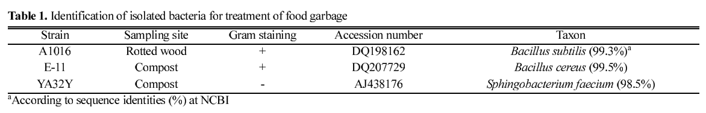
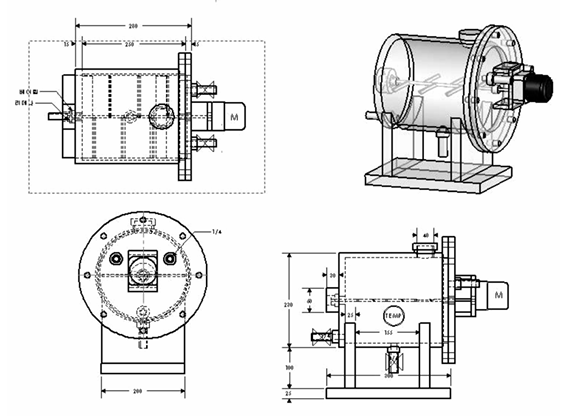

디지털트윈 오픈소스 데이터 모으기-발효 소멸기를 이용한 음식물쓰레기의감량 및 악취제거
음식물 쓰레기에 쓰는 균의 경우 현재 우리나라 음식물 쓰레기의 주된 성분인 섬유소와 전분, 그리고 단백질 분해효소의 활성이 우수한 균주를 써야 함.
-Cellulase 생산 균주
-Amylase 생산 균주
- Protease 생산 균주
-홍색비유황세균( Rhodobacter sp.와 Rhodospirillum sp. 혼합균주 )

분리된 균주들 중 cellulase, amaylase와 protease의 활성이 가장 우수한 균주를 선별하였고, 동정을 위해서 16S rDNA sequence 분석을 실시하였다. 그 결과 A1016, E-11와 YA32Y 균주가 각각 Bacillus subtilis, Bacillus cereus, Sphingobacterium faecium과 99.3%, 99.5%, 98.5%가 일치하는 유사도를 나타냈다 (Table 1).
Bacillus subtilis, Bacillus cereus, Sphingobacterium faecium
-홍색비유황세균은 우수한 유기물 분해능과 악취제거 효율이 보고되고 있으며 특히 유기성 폐수, 돈분 폐수, 음식물 쓰레기의 처리 등에 많은 연구가 이루어지고 있음. 여기에 음식물 쓰레기의 주요구성물질의 분해효소를 분비하는 3종의 미생물을 추가로 혼합하여 그 분해효율을 평가함
- 실험 결과 간헐적 통기에 따른 산소고갈로 인한 무산소 조건 형성 시 발효에 의한 유기산과 이산화탄소가 축적되면서 pH가 급격히 매우 낮은 수준으로 떨어지면서 미생물들에 의한 분해 작용이 크게 저해를 받음 -> 팬이 있어야 함.
- 지속적인 pH의 조정에 의한 음식물 쓰레기의 감량효율을 조사하고 비교하여 최적의 pH 를 결정하기 위해서 pH를 5, 6, 7, 8로 유지하면서 음식물 쓰레기의 감량효율을 측정하였다. 그 결과 pH에 따라 분해율이 큰 차이는 보이지 않았지만 pH 7에서 21.6%로 가장 높은 분해율을 나타냈다.

-여기서 유의미하게 본 조건은 pH, 물, 온도, 공기이다.
pH =7 , 수분은 적정수분, 온도별로 소멸화 실험을 진행하였다. 그 결과 30C에서 가장 높은 감량율을 나타냄.
-우리는 교반속도를 추가할 것.
15일간의 실험으로 35%의 분해효과를 입증함.